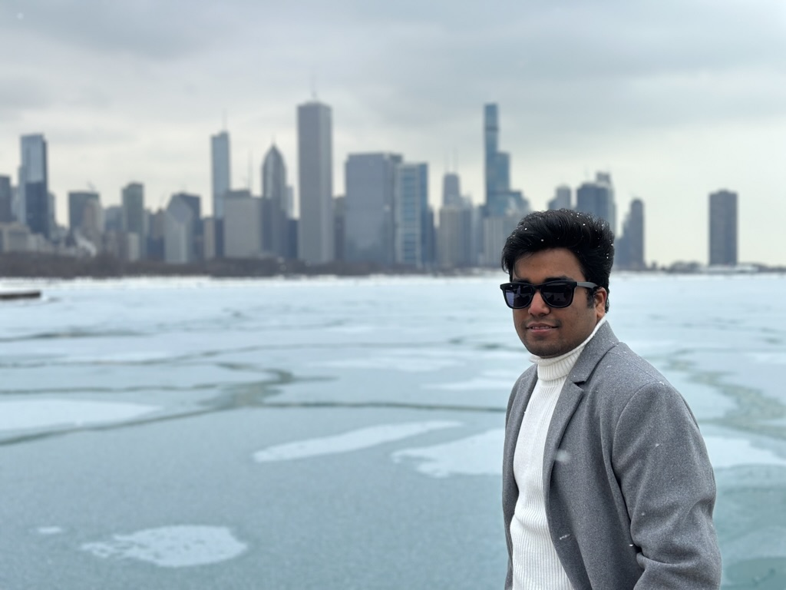
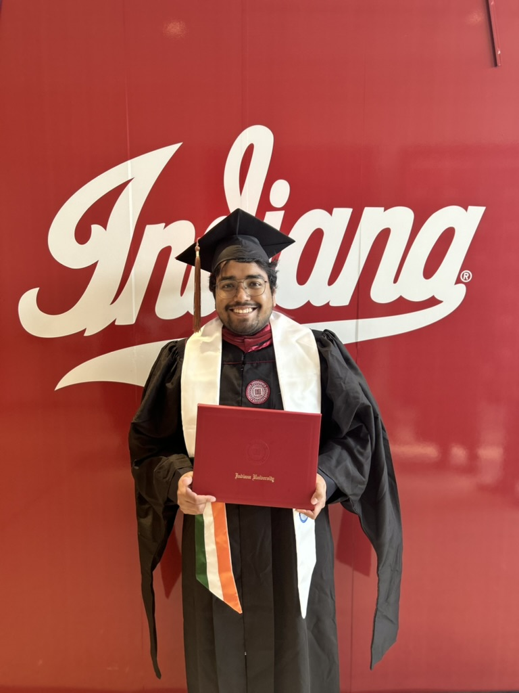

~/off-the-clock
Curiosity doesn’t clock out.
A little more of life beyond datasets and models: new places, photographs, and something good on the stove.

OUTSIDE WORK
A change of scenery is good for the mind.
I like exploring new places, noticing the details worth photographing, and making time to cook at home. These interests keep me curious away from the screen, too.
- TravelFIND A NEW ROUTE
- PhotographyKEEP THE MOMENT
- Home cookingMAKE SOMETHING GOOD
